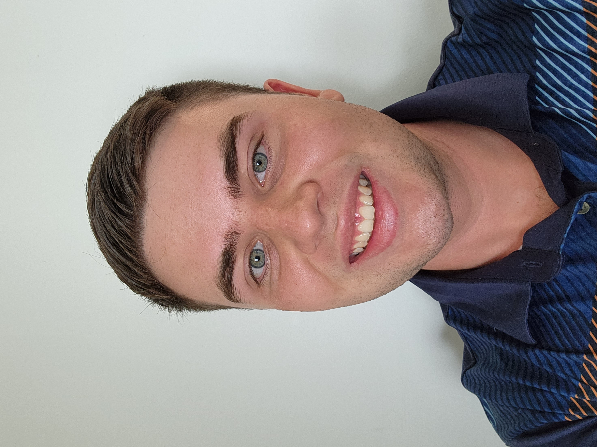

About Me
My name is Kollin Labowski, and I am currently working towards my Ph.D. in Computer Science at the University of Florida. My research is in applied cryptography and hardware security. I graduated from West Virginia University in August of 2022 with my B.S. in Computer Science with an area of emphasis in Cybersecurity and a minor in Mathematics. I have over 8 years of programming experience in languages such as Java, Python, C, and JavaScript, including a year spent working on an Agile team in a professional software engineering environment. I'm a huge math fan, with a particular interest in connecting theory with practice. In my free time, I enjoy playing board games, going for hikes, challenging friends to games of badminton/racquetball/pickleball, reading, and making music on my bass guitar. Thanks for visiting my website, and please considering checking out the above links!